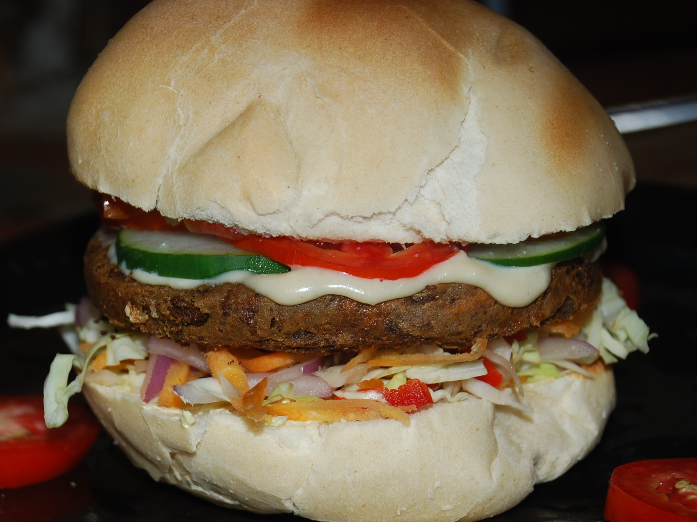
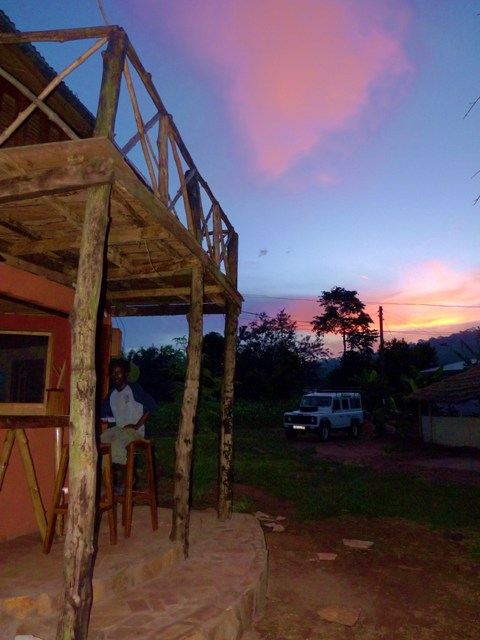

In Ghana, when you hear Vegetarian it's usually Vegan (No Meat, No Dairy, No Egg), also refered to as "ital" (Vital). We strive to produce healthy, wholesome food with Good Nutritional Balance and Wonderful Flavours. Serving a variety of Traditional Ghanaian meals as well as many other delicious dishes inspired by local ingredients, with an exciting twists. The food is served in a Stylishly Simple Summer Hut surrounded by lush, green vegetation.


All our Ghana-essentials like Red-Red, Palava Sauce, Jollof Rice or Wakye are even more amazing with their Vegan/ital substitute for meat, in the form of tasty Tofu-squares or Khebabs, guaranteed to be loved by vegetarians and non-vegetarians alike.
For something a little different try our 'Cocoa Cook-up': a combination of Chocolate & Spices to make a Rich, Dark Savoury Sauce, so fitting for Ghana (one of our biggest Exports being Cocoa), 'Coconut Cook&Curry': with Aromatic Coconut Milk Sauce & Freshly made Green Curry Paste... or 'Groundnut Gumbo': a creamy, Spicy, sweet-potato & Groundnut/peanut dish inspired by a recipe from Mali.

With exciting snacks including Plantain-chips & guacamole and a number of exotic salads to choose from as well as a delicious choice of Home-made cakes and Vegan ice-cream, there is something for everyone.

We are aware that a Vegan Diet of Fresh, Local ingredients is not only the Healthiest for our bodies, but also for the Earth. The raising of Cattle produces three of the most harmful gasses contributing to Global Warming (Carbon dioxide, Methane & Nitrous Oxide). It is also a Major cause of water pollution and requires a staggering 2,464 gallons of water for the production of each pound of meat.
So conscientiously cutting down on the consumption of meat in your Diet - if not giving it up completely - would massively effect your 'Carbon Footprint'. We know how much you will enjoy our alternatives to meat, egg and dairy, and how little you will miss it when you leave it out of your diet.
Roots Yard has a Juice Bar with an extensive selection to Quench your thirst. Localy Grown, Freshly Squeezed Fruit Juices & Blended Smoothies to make your taste-buds tingle... with Soy-Milk-Shakes and local drinks like 'Red Zingah' (Sorel) and ' Grass Roots' (lemongrass & ginger) we are trying to encourage healthy alternatives to minerals/fizzy drinks.
We only serve Real Coffee, no instant coffee, whatsoever. Our Coffee is all Fairly Traded and grown on the African Continent. From our local filter coffee grown in the hills just to the East of Peki, or the Togolese beans produced at the Danyi-Dzogbegan Monastery, the Strong Ethiopian Coffee in our espresso and the wonderfull aroma of the beans grown in the Kwawu Mountains in the Eastern Region of Ghana in our cappuccino, lattes or cafetiere. The mere smell of your cup brewing will energize and mesmerise. Rich and nutty, aromatic, full of the Flavours of the African Earth and of the first rainfall on dry parched ground, quenching, rejuvenating, refreshing.

The funky bar is a great place to hang out each evening, sharing the experiences of the day with others.
We serve Alcohol but ensure that all is sourced from the African Continent. Ghana produces some interesting 'Bitters' as well as a wonderfully smooth Cocoa/Coffee liqueur called 'Takai'. Our Beers are all produced in Ghana and we have some good South African Wines as well as 'Amarula' a Licqueur made from the fruit of the Marula Tree also from South Africa.
The Yard is full of shaded spots to relax with your drink while listening to some great tunes.